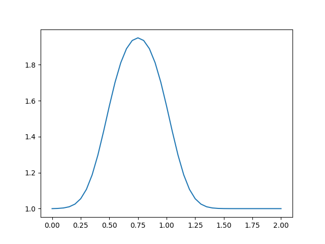
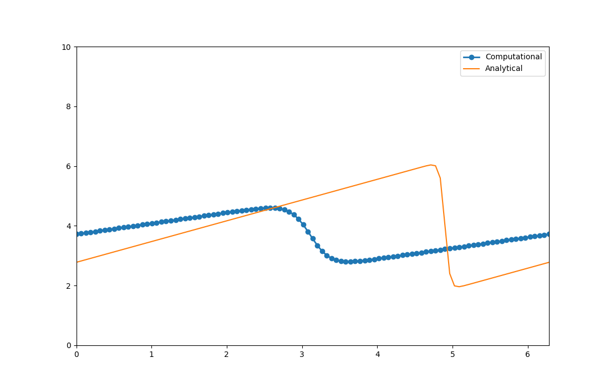

Diffusion (Yayınım) Denklemi
Tek boyuttaki yayınım denklemi,
$$ \frac{\partial u}{\partial t} = \nu \frac{\partial^2 u}{\partial x^2} $$
Dikkat edersek bu denklemde bir ikinci kısmı türev var. Denklemin o kısmını Merkezi Farklar yaklaşımı ile ayrıksal hale getireceğiz, bu yaklaşım İleri Farklar ve Geriye Farklar yaklaşımlarının birleştirilmesi ile elde edilir.
Önce Taylor serilerini hatırlarsak, genel tanım
$$ f(x+h) = f(x) + h f'(x) + \frac{h^2}{2} f"(x) + ... $$
Biz $u_{i+1}$ ve $u_{i-1}$ açılımını Taylor serisi ile yapmak istiyoruz, daha önce belirttiğimiz gibi bir önceki ve sonraki $x$ değerleri $\Delta x$ uzaklığında, yani bir önceki
$$ u(x-\Delta x) = u(x) - \Delta x f'(x) + \frac{h^2}{2} u"(x) + ... $$
İşaretin eksi olmasına dikkat, ve sonraki
$$ u(x+\Delta x) = u(x) + \Delta x f'(x) + \frac{h^2}{2} u"(x) + ... $$
Şimdi indisleriyle $u$ için ve [1]'deki formuyla yazalım,
$$ u_{i+1} = u_i + \Delta x \frac{\partial u}{\partial x}\bigg|_i + \frac{\Delta x^2}{2} \frac{\partial ^2 u}{\partial x^2}\bigg|_i + \frac{\Delta x^3}{3!} \frac{\partial ^3 u}{\partial x^3}\bigg|_i + O(\Delta x^4) $$
$$ u_{i-1} = u_i - \Delta x \frac{\partial u}{\partial x}\bigg|_i + \frac{\Delta x^2}{2} \frac{\partial ^2 u}{\partial x^2}\bigg|_i - \frac{\Delta x^3}{3!} \frac{\partial ^3 u}{\partial x^3}\bigg|_i + O(\Delta x^4) $$
Bir üstteki denklemin ilk hali $u_i = u_{i-1} ... $ ile ama ufak bir yer değişimi ile görülen biçim elde edilmiş.
Son iki formülü toplarsak bazı terimlerin ters işaretli olması sebebiyle iptal olacağını görebiriliz. Ayrıca yaklaşık temsil açısından $O(\Delta x^4)$ ve daha üstü kuvvetleri yok sayarsak,
$$ u_{i+1} + u_{i-1} = 2u_i+\Delta x^2 \frac{\partial ^2 u}{\partial x^2}\bigg|_i + O(\Delta x^4) $$
$\frac{\partial ^2 u}{\partial x^2}\bigg|_i$ için çözersek ve tekrar düzenlersek,
$$ \frac{\partial ^2 u}{\partial x^2}=\frac{u_{i+1}-2u_{i}+u_{i-1}}{\Delta x^2} + O(\Delta x^2) $$
$O(\Delta x^2)$ ifadesi $O(\Delta x^4)$ terimi $\Delta x^2$ ile bölününce ortaya çıktı.
Artık 1D yayınım formülünün nihai ayrıksal halini yazabiliriz,
$$ \frac{u_{i}^{n+1}-u_{i}^{n}}{\Delta t} = \nu\frac{u_{i+1}^{n}-2u_{i}^{n}+u_{i-1}^{n}}{\Delta x^2} $$
Daha önce olduğu gibi başlangıç koşuları tanımlı ise tek bilinmeyen $u_{i}^{n+1}$, bu bilinmeyen eşitliğin solunda kalacak şekilde tekrar düzenlersek,
$$ u_{i}^{n+1} = u_{i}^{n}+\frac{\nu\Delta t}{\Delta x^2}(u_{i+1}^{n}-2u_{i}^{n}+u_{i-1}^{n}) $$
Üstteki denklem bize çözümü adım adım ilerletmemizi sağlayacak. Ama bir başlangıç koşuluna ihtiyacımız var, daha önceki favorimize dönebiliriz, şapka fonksiyonu. $t=2$'de $u=0$, $0.5\le x\le 1$ aralığında ise $u=1$.
nx = 41
dx = 2 / (nx - 1)
nt = 20
nu = 0.3
sigma = .2
dt = sigma * dx**2 / nu
u = np.ones(nx)
u[int(.5 / dx):int(1 / dx + 1)] = 2
un = np.ones(nx)
for n in range(nt):
un = u.copy()
for i in range(1, nx - 1):
u[i] = un[i] + nu * dt / dx**2 * (un[i+1] - 2 * un[i] + un[i-1])
plt.plot(np.linspace(0, 2, nx), u);
plt.savefig('compscieng_app45cfd2_01.png')

Burger'in Denklemi
Bu denklem tek boyutta suna benziyor
$$ \frac{\partial u}{\partial t} + u \frac{\partial u}{\partial x} = \nu \frac{\partial ^2u}{\partial x^2} $$
Goruldugu gibi bu formul gayri lineer taşınım akımı (convection) ile yayinim (diffusion) formullerinin birlesimi. O zaman denklemi once gordugumuz teknikler ile ayriksal hale getirebiliriz.
$$ \frac{u_i^{n+1}-u_i^n}{\Delta t} + u_i^n \frac{u_i^n - u_{i-1}^n}{\Delta x} = \nu \frac{u_{i+1}^n - 2u_i^n + u_{i-1}^n}{\Delta x^2} $$
Daha önce olduğu gibi başlangıç koşulumuz var, ona göre denklemi tekrar düzenliyoruz,
$$ u_i^{n+1} = u_i^n - u_i^n \frac{\Delta t}{\Delta x} (u_i^n - u_{i-1}^n) + \nu \frac{\Delta t}{\Delta x^2}(u_{i+1}^n - 2u_i^n + u_{i-1}^n) $$
Bu örnekte farklı bir başlangıç şartı kullanacağız.
$$ u = -\frac{2 \nu}{\phi} \frac{\partial \phi}{\partial x} + 4 $$
$$ \phi = \exp \bigg(\frac{-x^2}{4 \nu} \bigg) + \exp \bigg(\frac{-(x-2 \pi)^2}{4 \nu} \bigg) $$
Bu başlangıç şartlarına göre Burger denkleminin analitik çözümü biliniyor,
$$ u = -\frac{2 \nu}{\phi} \frac{\partial \phi}{\partial x} + 4 $$
$$ \phi = \exp \bigg(\frac{-(x-4t)^2}{4 \nu (t+1)} \bigg) + \exp \bigg(\frac{-(x-4t -2 \pi)^2}{4 \nu(t+1)} \bigg) $$
Sınır şartı
$$ u(0) = u(2\pi) $$
Fakat başlangıç şartını belli izgara noktalarında işletebilmek istiyoruz, fakat
üstteki formülde çetrefil bir form var, birşeylerin türevi vs var. Ne yapacağız?
Paket sympy kullanılabilir.
import sympy
from sympy.utilities.lambdify import lambdify
from sympy import init_printing
init_printing(use_latex=True)
x, nu, t = sympy.symbols('x nu t')
phi = (sympy.exp(-(x - 4 * t)**2 / (4 * nu * (t + 1))) +
sympy.exp(-(x - 4 * t - 2 * sympy.pi)**2 / (4 * nu * (t + 1))))
phiprime = phi.diff(x)
u = -2 * nu * (phiprime / phi) + 4
ufunc = lambdify((t, x, nu), u)
print(ufunc(1, 4, 3))
3.49170664206445
nx = 101
nt = 100
dx = 2 * np.pi / (nx - 1)
nu = .07
dt = dx * nu
x = np.linspace(0, 2 * np.pi, nx)
un = np.empty(nx)
t = 0
u = np.asarray([ufunc(t, x0, nu) for x0 in x])
plt.figure(figsize=(11, 7), dpi=100)
plt.plot(x, u, marker='o', lw=2)
plt.xlim([0, 2 * np.pi])
plt.ylim([0, 10]);
plt.savefig('compscieng_app45cfd2_02.png')
for n in range(nt):
un = u.copy()
for i in range(1, nx-1):
u[i] = un[i] - un[i] * dt / dx *(un[i] - un[i-1]) + nu * dt / dx**2 *\
(un[i+1] - 2 * un[i] + un[i-1])
u[0] = un[0] - un[0] * dt / dx * (un[0] - un[-2]) + nu * dt / dx**2 *\
(un[1] - 2 * un[0] + un[-2])
u[-1] = u[0]
u_analytical = np.asarray([ufunc(nt * dt, xi, nu) for xi in x])
plt.figure(figsize=(11, 7), dpi=100)
plt.plot(x,u, marker='o', lw=2, label='Hesapsal')
plt.plot(x, u_analytical, label='Analitik')
plt.xlim([0, 2 * np.pi])
plt.ylim([0, 10])
plt.legend();
plt.savefig('compscieng_app45cfd2_03.png')

[devam edecek]
Kaynaklar
[1] Barba, 12 steps to Navier–Stokes, Ders 1, https://nbviewer.jupyter.org/github/barbagroup/CFDPython/blob/master/lessons/01_Step_1.ipynb